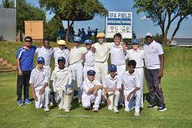
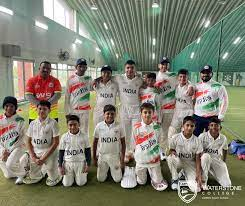
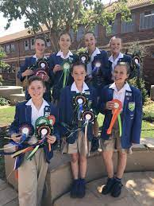

U15 Cricket
The high school U15 cricket team won the Waterstone Derby against six other schools. WELL DONE BOYS! Keeping the F.I.R.E ALIVE!
Well done to the following players:
- James Miller- - Player of the Match.
- John Micheals - Bowling figures of 5/43.
- Sam Burns - Batting score of 115 Not out.
- Joe Jackson - Player of the Tournament.

More cricketing news
Waterstone welcomes the Sanstosh Sports Cricket Academy from Mumbai, India for the fifth time. Hope you enjoy your stay with us!

Equestrian team exels
Our wonderful equestrian team achieved a second place in the Sedibeng region. Well done to all our riders for this great achievement!

Click here to go back to the Home Page.